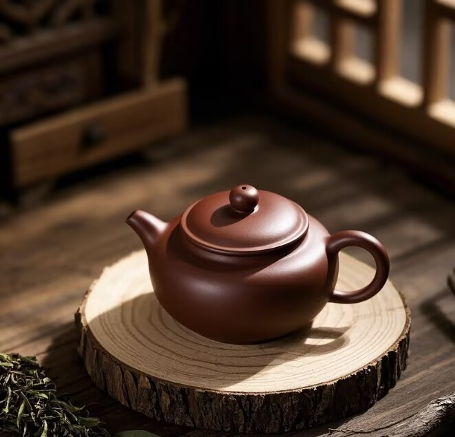
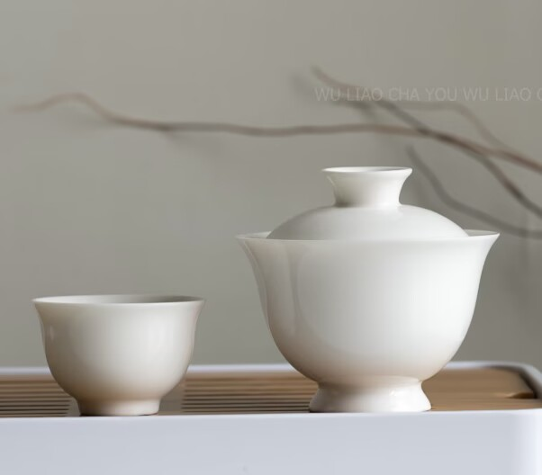
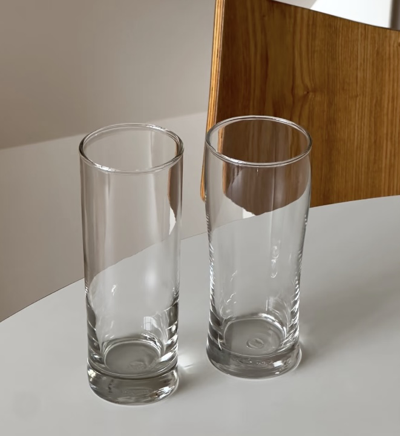

茶史解说
常用茶器

紫砂壶

白瓷盖碗

玻璃杯
茶识知识库
茶类风味
六大茶类的特点
绿茶鲜爽、红茶甜醇、乌龙茶香气高扬、白茶清甜、黄茶温润、黑茶醇厚。
茶类风味
绿茶的冲泡水温
明前绿茶用70-80℃水温，雨前绿茶用80-85℃水温，避免烫熟茶叶。
茶器使用
盖碗的使用技巧
盖碗又称三才碗，持握时拇指按盖沿，食指中指夹碗身，避免烫手。
饮茶养生
不同茶类的养生功效
绿茶抗氧化、红茶暖胃、乌龙茶降脂、白茶消炎、黑茶促消化。
茶史文化
中国茶文化简史
从神农尝百草到唐代煎茶、宋代点茶、明清瀹饮，茶文化源远流长。
茶桌礼仪
叩指礼的由来
主人斟茶时，客人以食指中指轻叩桌面，表示谢意，源自乾隆微服私访的典故。
茶器使用
茶道六君子
茶筒、茶则、茶匙、茶漏、茶夹、茶针，各司其职，辅助泡茶。